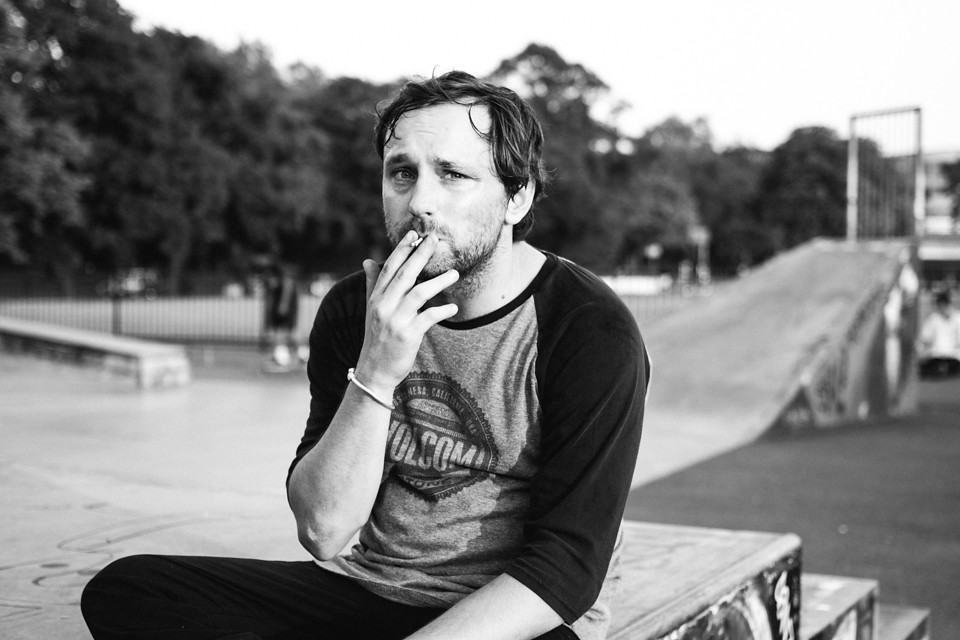

Programátor skaterem
Může být programátor skaterem? Poněkud podivná kombinace že? Programátora si lidé představí, jako mírně asociálního člověka, co neustále sedí za počítačem. Oproti tomu skejťáka, jako někoho, kdo se jen poflakuje po venku s kamarády a nic nedělá. V článku se pokusím tyto stereotypy vyvrátit.
Programátor

K programátorům se váže spousta stereotypů jako mírná asocializace, matematické myšlení, nevole ke sportu. Většina těchto věcí je ve skutečnosti úplně jinak. Uvedu je na pravou míru, abych podobné názory nepřiživoval.
Lidé si myslí, že když je někdo programátor, tak jen sedí doma nebo ve sklepě u svých 5 monitorů a nedělá nic jiného - nesportuje, nechodí ven s přáteli, nesocializuje se. Díky tomu si ho často představí jak bez kondice a motoricky méně schopného. Dále si myslí, že programátoři jsou milovníci matematiky.
To, že se programátoři méně socializují než ostatní lidé, může být trochu pravda, sám to tak mám. Ostatní na mě však moc nesedí. Jsem nadšený sportovec a mám kondičku. Matematika opravdu není pro programátora nutností a když vidím kolika lidem u nás na škole dělala problémy, tak není ani tak oblíbená.
Skater
Vůči skejťákům se taky vytvořila spousta stereotypů. Patří mezi ně lenost, poflakování, alkohol, marihuana a podobné. V dnešní době již ale typický skejťák vypadá trošku jinak.
Když se zeptáte někoho, kdo se skejťáky nemá bližší kontakt, tak vám je popíše asi takto. Většinu času se poflakují po venku, hojně kouří (cigarety i marihuanu) a popíjejí. Na skejťáky dost lidí pohlíží jako na vandaly, neperspektivní lidi, co nedokáží přemoct svoji lenost.
Za posledních 5 let se doba velice změnila. Od té doby, co se skateboarding zapsal mezi olympijské sporty, tak ho patrná část skejťáků bere více vážně. Trénují jako jiní sportovci, nekouří, nepijí, dobře se stravují a snaží se někam posouvat. Je ale pravda, že takoví nejsou zdaleka všichni a "typických" skejťáků najdeme pořád dost.
Závěr
Osobně nezapadám ani do jedné skupiny. Mám nejrůznější vlastnosti, takže jsem takový mix všeho možného. Stačí, když se budeme snažit lidi tolik neškatulkovat. Není důvod proč bych nemohl být jak programátor, tak skejťák. V přiloženém videu uvidíte, že skateboardingu jsem se dost věnoval a neberu ho na lehkou váhu. A můj životopis ukazuje, že programování také nezanedbávám.
Publikováno: 20. 9. 2019 Autor: Jan Novák